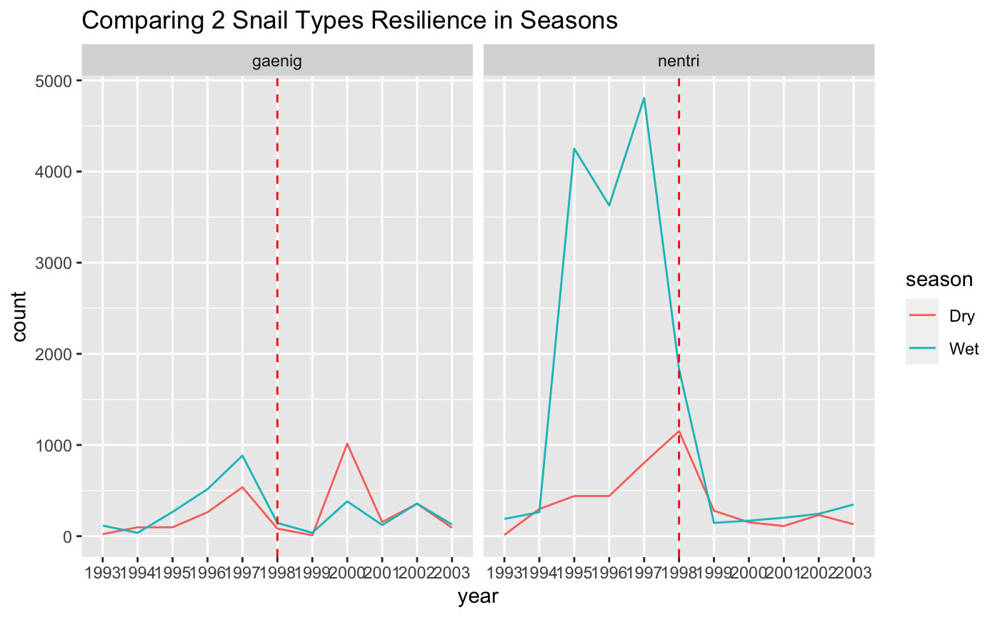
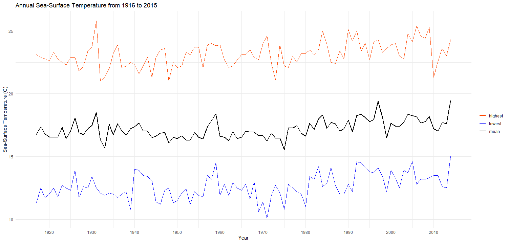
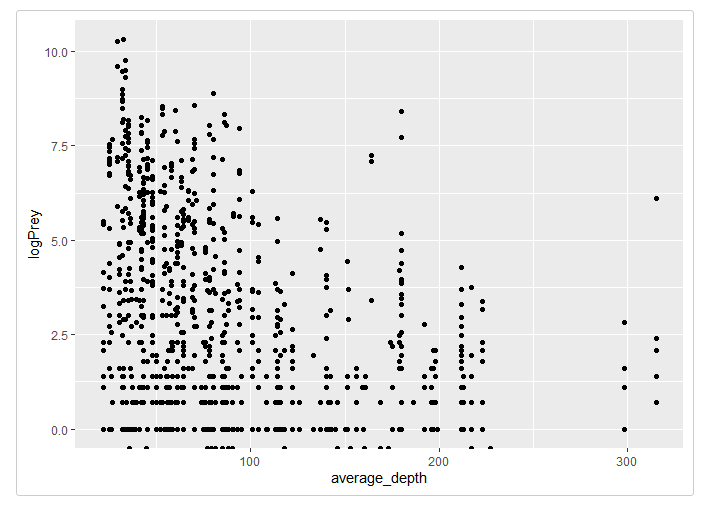

Update 2¶
February 28, 2021
Long Term Ecological Research (LTER) Datasets: R package¶
Project Sponsor: National Center for Ecological Analysis and Synthesis (NCEAS)
Team Members: Sam Guo, Adhitya Logan, Lia Ran, Sophia Sternberg, Karen Zhao
Progress¶
Began coworking hours on Fridays in addition to our weekly meeting on Mondays to collaborate, share ideas and troubleshoot.
Learned the workflow of creating an R package from scratch based on this example, such as creating documentation, licenses, github repositories, and functions using the say_aloha, devtools, and use_this packages.
Incorporated what we learned in past weeks, such as the github, tidyverse, and metajam workflows.
explored interesting datasets from LTER sites to create vignettes in our R package
Large importance placed on the creation of vignettes and their audiences.
Presenting our demo packages and vignettes during our weekly meetings to update the group and to receive feedback.
Our installable R packages can be found here:
Adhitya: Adhitya’s Package
Sophia: Sophia’s Package
Karen: Karen’s Package
Lia: Lia’s Package
Sam: Bonanza
Examples of our vignettes:¶
Sophia
I worked with a Fish Abundance dataset from the SBC (Santa Barbara Coastal) LTER. This dataset is particularly interesting because researchers record the date, site, fish type, and length. I chose this visualization of garibaldi fish due to the variety of its recorded length across multiple sites within SBC. The disparity in garibaldi fish length could be due to actual differences or also due to inconsistency in researcher’s measuring techniques. This is a great real-world example for future data science students to learn from due to these clear, inherent differences. The fish abundance dataset is extremely workable and had a lot of promise for future analysis.

Lia
The dataset I worked with is from the Luquillo site. Luquillo is an experimental forest. After a hurricane Georges in 1998, the dataset I explored investigates the recovery of snails over time. After converted the data from wide to long, I aggregated total snail counts by species and plotted them in a time series to try and see what snail species seemed the most resilient.

This graph shows us that ‘gaenig’ (Gaeotis nigrolineata) has the highest resilience in frog species: their numbers return to the original pre-hurricane levels just a couple years after hurricane Georges. On the other hang, it seems like ‘nentri’ (Nenia tridens) had a sharp decrease in their numbers, which seems to have plateaued out. I made this graph interactive in R, since there are so many species it helps us analyze trends better.
After this plot, I wanted to determine if there was a difference in snail recovery of these two species differing in wet or dry seasons. ‘Gaenig’, which has high resilience as seen in the previous graph, seems to have returned to their previous numbers during the dry season surprisingly, despite previous trends of the wet season. On the other hand, we can see that traditionally ‘nentri’ thrives during the wet season, and we can see this trend slowly start to continue after the devastation of the hurricane.

After this plot, I wanted to determine if there was a difference in snail recovery of these two species differing in wet or dry seasons. ‘Gaenig’, which has high resilience as seen in the previous graph, seems to have returned to their previous numbers during the dry season surprisingly, despite previous trends of the wet season. On the other hand, we can see that traditionally ‘nentri’ thrives during the wet season, and we can see this trend slowly start to continue after the devastation of the hurricane.
Karen
The dataset that I worked with is daily sea-surface temperature measurements, collected from the end of the Scripps Pier at the sea surface and a depth of about 5 meters. The location makes data collected here quite representative of oceanic condition. This dataset is from the California Current Ecosystem (CCE) LTER. CCE is a coastal upwelling biome, located off the southern coast of California. Many of the studies conducted here focus on changes in the ocean ecosystem. This includes a long term ocean warming trend, which can have biological effects on plankton production, fish catch and seabirds.

We can see from the plot above that the sea-surface temperature (annual average, single day highest, and single day lowest) from 1916 to 2015 has been increasing over the years.
Sam
The dataset that I’m working on is from the Northeast U.S. Shelf LTER, which observes the ocean ecosystem in the Atlantic in order to draw conclusions and make predictions about food webs and how they continually change over time, as well as how it affects higher trophic levels in the area and biome. The specific dataset is from a series of observations of predator and prey relationships by recording the number of prey found in predators’ stomachs. The below plot showcases a relationship between the average sampling depth and the log of the prey count:

It’s clear that there is some sort of downward trend, indicating that as depth increases, the individual number of prey found tends to decrease. This may be due to the fact that as light becomes more and more scarce, there are less microscopic organisms to ingest and thus the prey count decreases rapidly.
The data is also useful for drawing conclusions about specific species. This next graph is a grouped histogram showcasing the distribution of predators of a specific prey species:

Some insights can be drawn from these types of graphs, such as Calanoida being particularly suspectible to being eaten by Atlantic mackerel. Further analysis and more advanced techniques such as graph analysis and better transformations can help to paint a better picture of how this data interacts with each other to form a complex food web.
Adhitya
This plot shows the percent change in the amount of days that lakes in Madison, WI were frozen each year, as well as the percent change in the mean annual temperature in Madison, WI. This data is from the Northern Temperate Lakes (NTL) LTER.

It’s important for researchers to study if there are disruptions to lake ecosystems, as this can have ripple effects for the rest of the local environment. If there are disruptions, understanding the reasons behind them can help scientists mitigate these effects. To demonstrate this, data containing the length of time that Lake Monona, Lake Wingra, and Lake Mendota were frozen every year was merged with daily temperature data for Madison, WI. The lake data was averaged across all three lakes to create a single measurement for each year, and the temperature data was averaged across each year to obtain a mean annual temperature. Then, all measurements were compared with the earliest entry for both categories by computing the percent change for each year. As a result, the change in ice duration over time could be compared with the change in temperature over time on the same set of axes.
The plot shows that, over time, the average temperature in Madison, WI is increasing and that the amount of time lakes in Madison are freezing for every year is gradually decreasing. Additionally, there are several years where a spike in temperature seems to have a corresponding decrease in ice duration. From these observations, it is possible that there is a correlation between temperature and the ice duration of lakes. In the future, time series analysis could be conducted to quantify the correlation between the two variables.
Future Plans¶
For the remainder of this quarter, we plan to refine our packages and vignettes even more, while adding more in-depth descriptions and other important metadata about our packages. To do this, we will need to know our datasets inside and out and understand every nuance.
Start deciding which datasets we will import to our final product and map out a plan of how to best collaborate on this.
For next quarter, we will map out the best route to merge all of our individual packages into one, master package.